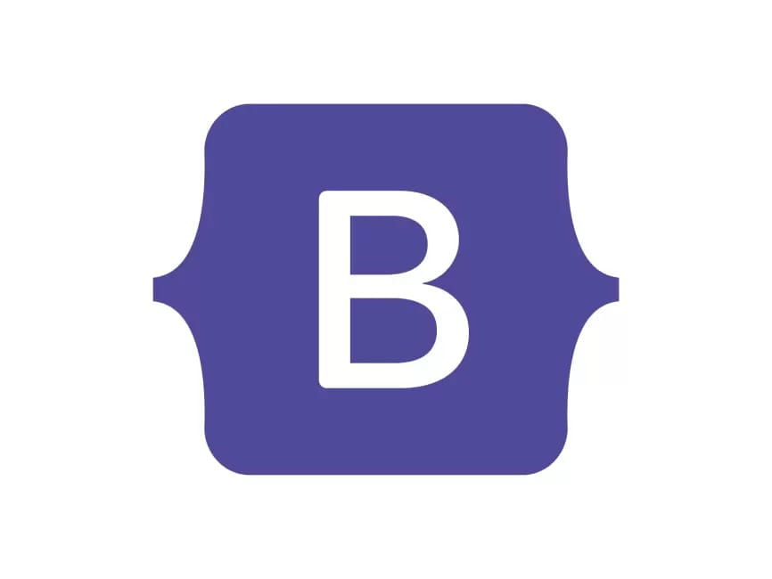

BootStrap

Bootstrapping is a self-starting process that is supposed to proceed without external input.
Bootstrapping, bootstrap, or bootstraps may also refer to:
- Bootstrap (front-end framework), a free collection of tools for creating websites and web applications
- Bootstrap curriculum, a curriculum which uses computer programming to teach algebra to students age 12–16
- Bootstrap funding in entrepreneurship and startups
- Bootstrap model, a class of theories in quantum physics
- Conformal bootstrap, a mathematical method to constrain and solve models in particle physics
- Bootstrapping (compilers), the process of writing a compiler in the programming language it is intended to compile
- Bootstrapping (electronics), a type of circuit that employs positive feedback
- Bootstrapping (finance), a method for constructing a yield curve from the prices of coupon-bearing products